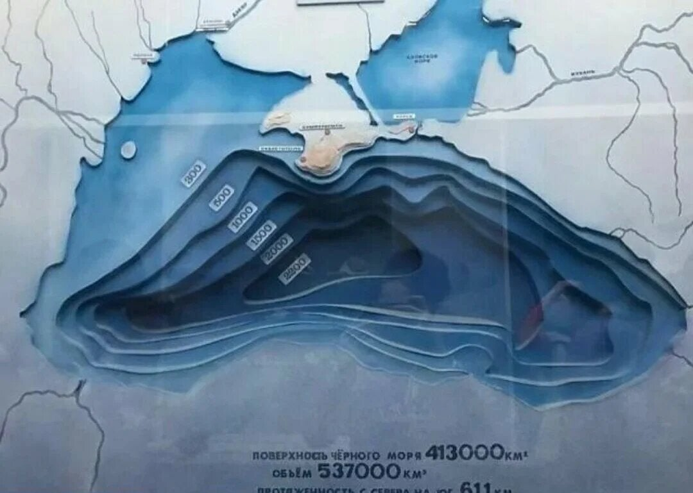

The Black Sea is a marginal mediterranean sea of the Atlantic Ocean lying between Europe and Asia; east of the Balkan Peninsula (Southeast Europe), south of the East European Plain in Eastern Europe, west of the Caucasus, and north of Anatolia in Western Asia. It is supplied by major rivers, principally the Danube, Dnieper, and Don. The watersheds of many countries drain into the sea beyond the six that share its coast.
One of the best and little known Black Sea facts is the origin of its name, which remains unclear. There are various theories as to how this sea got to be called by this particular name. Theories suggest that before being called the Black Sea, the body of water was called as ‘‘inhospitable Sea,’ mostly because of the presence of savage tribes on its shores. Once the Greeks took over its shorelines, the name was changed to “hospitable.” There are also references saying that the sea was called ‘the Sea’ for a quite long time. However, this sea has been given many names over the centuries by different people but this particular name happens to be the most famous one, believed to be given by the Turkish in medieval times. Historical documents suggest that, during the Ottoman Empire period, the Black Sea was called names such as Bahr-e Siyah or Karadeniz, which means “the Black Sea” in Ottoman Turkish. There are more hypotheses suggesting several reasons behind the origin of the Black Sea’s name. According to one argument, storms during the winter make the water in the Black sea appear black, leading the sailors to call it the Black Sea. Another theory suggested that the objects that drown in the water get black sludge covering after a period of time. The discovery of such items across the sea may have become a reason behind its name.
One of the most intriguing facts about the Black Sea is its anoxic water. Precisely, there is a significant absence of oxygen in the water. The Black Sea happens to be the largest water body with a meromictic basin, which means the movement of water between the lower and upper layers of the sea is a rare phenomenon to find anywhere in the world. This makes a considerable temperature difference between these layers along with making the lower layers absolute free of oxygen and hence, inactive. At the same time, the Black sea receives freshwater from its rivers and rainfall. However, the Black Sea only witness water transfer with the Mediterranean Sea. As the transfer takes place in the Bosphorus and Dardanelles, the inflow of dense water from the Mediterranean happens at the bottom of the basin, while the outflow of Black Sea surface water takes place near the surface of the basin. Since there is very low mixing between the two layers of the water in the Black Sea, marine life cannot survive in the anoxic zone of the Black Sea. It is only the oxygen-rich surface waters of the Black Sea are supporting marine life.
Because of the anoxic water at depth, organic matter, including anthropogenic artifacts such as boat hulls, are well preserved. During periods of high surface productivity, short-lived algal blooms form organic rich layers known as sapropels. Scientists have reported an annual phytoplankton bloom that can be seen in many NASA images of the region. As a result of these characteristics the Black Sea has gained interest from the field of marine archaeology, as ancient shipwrecks in excellent states of preservation have been discovered, such as the Byzantine wreck Sinop D, located in the anoxic layer off the coast of Sinop, Turkey. Modelling shows that, in the event of an asteroid impact on the Black Sea, the release of hydrogen sulfide clouds would pose a threat to health—and perhaps even life—for people living on the Black Sea coast. There have been isolated reports of flares on the Black Sea occurring during thunderstorms, possibly caused by lightning igniting combustible gas seeping up from the sea depths.